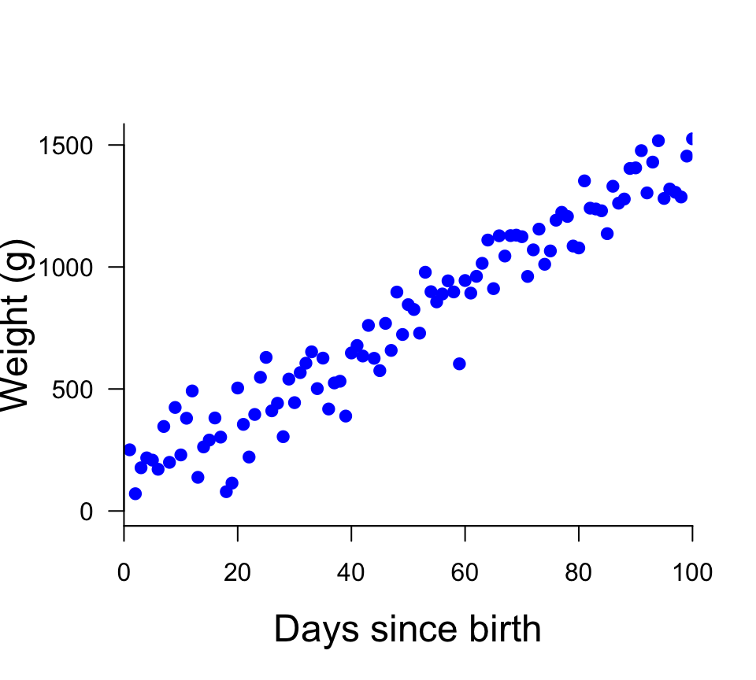

Bayesian modelling
Frequentist
. . .
In introductory statistics course, it is common to rely on the frequentist paradigm when inferring results from data.
. . .
Frequentists want to find the best model parameter(s) for the data at hand.
. . .
\[\text{Likelihood}\hspace{1.5cm}P(\text{Data}|\text{Model})\]
. . .
They are interested in maximizing the Likelihood
They need data
. . .
Estimating model parameters
- Minimizing the sums of squares
- Simulated annealing
- Nelder-Mead Simplex
- …
Bayesian
. . .
Bayesians want to find how good the model parameter(s) are given some data
. . .
\[\text{Posterior}\hspace{1.5cm}P(\text{Model}|\text{Data})\]
. . .
They are interested in the posterior distribution
. . .
They need data and prior information
. . .
The general framework used in Bayesian modelling is
\[\underbrace{P(\text{Model}|\text{Data})}_\text{Posterior}\propto \underbrace{P(\text{Data}|\text{Model})}_\text{Likelihood}\underbrace{P(\text{Model})}_\text{Prior}\]
. . .
Estimating model parameters
- Markov Chain Monte Carlo
- Hamiltonian Monte Carlo
- …
Our way of thinking is Bayesian

A few words about the prior
. . .
Definition of prior probability
. . .
The prior probability informes us about the probability of the model being true before the current data is considered
. . .
Types of priors
. . .
“Uninformative”
These priors are meant to bring very little information about the model
. . .
Informative
These priors bring information about the model that is available
A few words about the prior
“Uninformative” priors
. . .
Example If we have no idea of how elevation influence sugar maple
. . .
Gaussian distribution
\[f(x)=\frac{1}{\sqrt{2\pi\sigma^2}}e^{-\frac{(x-\mu)^2}{2\sigma^2}}\]
\(\mu = 0\)
\(\sigma = \text{Large say 100}\)
A few words about the prior
Informative priors
. . .
Example If we know that
- There are less sugar maples the higher we go
- The influence of elevation on sugar maple cannot be more than two folds
Uniform distribution
\[f(x)=\left\{ \begin{array}{cl} \frac{1}{b-a} & \text{for } x\in [a,b]\\ 0 &\text{otherwise}\\ \end{array} \right.\]
\(a > -2\)
\(b < 0\)

Estimating Bayesian model
. . .
As I hinted earlier, there are a number of ways to estimate the parameters of a Bayesian model. A common way to estimate Bayesian models is to rely on Markov Chain Monte Carlo (MCMC) or variants of it, including Hamiltonian Monte Carlo (HMC), which is used in Stan
. . .
Typical reasons to favour MCMC
. . .
- It is flexible
- It can be applied to complex models such as models with multiple levels of hierarchy
. . .
Why should we learn about MCMC ?
. . .
The goal of this course is not to learn the intricacies of MCMC or HMC, but since we will play a lot with Stan, it is important to learn at least conceptually how it works MCMC and HMC.
Markov Chain Monte Carlo (MCMC)
Historically, the developments of MCMC have been intimately linked with the arrival of computers. As such, the first developments and applications of MCMC were made during the Los Alamos projects.
To explain what is an MCMC, let’s imagine that we are interested in understanding how the mallard (Anas platyrhynchos) grows from hatchling to adult.

Markov Chain Monte Carlo (MCMC)
A simplistic statistical example
. . .
Let’s say that we are interested in modelling how male Mallard weight changes as they grow from hatching to adult. Here are some data obtained from a local Mallard duck farm.
. . .

Markov Chain Monte Carlo (MCMC)
A simplistic statistical example
. . .
A growth model can be constructed using a simple linear regression
\[y = \beta_0 + \beta x + \varepsilon\] From this model we can infer that the average weight of a Mallard duck when it hatches is 107 grams (intercept), and the average daily growth of the Mallard is 13.5 grams (slope).
. . .

Markov Chain Monte Carlo (MCMC)
A simplistic statistical example
Estimating the intercept and slope parameters of the simple linear regression can be done with an MCMC. This amount to sampling
\(\beta_0\) as
. . .
\[\beta_0 \sim \mathcal{D}(\text{mean}, \text{variance}, \text{skewness}, \text{kurtosis}, \dots)\]
. . .
and \(\beta\) as
. . .
\[\beta \sim \mathcal{D}(\text{mean}, \text{variance}, \text{skewness}, \text{kurtosis}, \dots)\]
In doing so, we are not focusing on finding the ‘best’ parameter values. Rather, we are focused on finding the distribution of best parameter values.
Markov Chain Monte Carlo (MCMC)
. . .
When using an MCMC, we are interested in sampling the distributions to estimate the parameters of the model.
. . .
Since we do not know what the “true” characteristics of the distributions, MCMC and HMC rely on different approaches to assess the structure of the distribution is.
Markov Chain Monte Carlo (MCMC)
MCMC relies on using many random samples to assess the structure of the distribution.

Hamiltonian Monte Carlo
Hamiltonial Monte Carlo relies on Hamiltonian dynamics to assess the structure of the distribution.

Sampling the parameters
. . .
In MCMC and HMC, a lot of iterations need to be carried out to assess the distribution of parameters. But how many is enough ?
. . .
Here is a rough procedure to follow:
- Perform a pilot run with a reduced number of iterations (e.g. 10) and measure the time it takes
- Decide on a number of steps to run to obtain a result in a reasonable amount of time
- Run the algorithm again !
- Study the chain visually
Studying convergence

Studying convergence

Studying convergence
If we ran the same MCMC as above but instead for 50000 steps, we obtain
. . .

. . .
Note It is also possible to thin (record only the \(n^{\text{th}}\) iteration), but it is better to keep all iterations when possible. Actually, thinning should only be carried out when there are too many iterations for you to keep them and manipulate them in the memory of your computer.
Studying convergence
Burn-in
Burn-in is throwing away some iterations at the beginning of the MCMC run
. . .

Studying convergence
Burn-in
After burn-in, we obtain
. . .